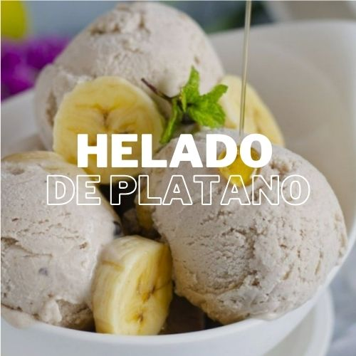

Helado de Plátano y Frutas

Ingredientes
- 2 plátanos maduros
- 1 taza de frutas congeladas (fresas, mangos, arándanos, etc.)
- 1 cucharadita de extracto de vainilla (opcional)
Instrucciones
- Pela los plátanos y córtalos en rodajas.
- Congela las rodajas de plátano durante al menos 2 horas.
- Coloca las rodajas congeladas de plátano y las frutas congeladas en un procesador de alimentos.
- Procesa hasta obtener una mezcla cremosa. Si lo deseas, agrega el extracto de vainilla.
- Sirve inmediatamente o vuelve a congelar para una textura más firme.